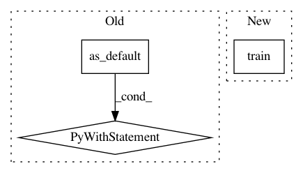

e13771aec07c844a93e9700216d07b8073ce35fb,src/train.py,,main,#Any#,193
Before Change
def main(argv=None):
with tf.Graph().as_default():
saver_hook = tf.train.CheckpointSaverHook(
checkpoint_dir=FLAGS.output,
save_secs=150)
hooks = [saver_hook]
// Initialize the classifier
classifier = tf.estimator.Estimator(model_fn=model_fn,
model_dir=FLAGS.output)
// Train the model
classifier.train(input_fn=lambda: mjsynth.bucketed_input_pipeline(
FLAGS.train_path,
str.split(FLAGS.filename_pattern,","),
batch_size=FLAGS.batch_size,
num_threads=FLAGS.num_input_threads,
input_device=FLAGS.input_device,
width_threshold=FLAGS.width_threshold,
length_threshold=FLAGS.length_threshold ),
hooks=hooks)
with tf.device(FLAGS.train_device):
features,sequence_length = model.convnet_layers( image, width, mode)
logits = model.rnn_layers( features, sequence_length,
dynmj.num_classes() )
After Change
_get_session_config()))
// Train the model
classifier.train(input_fn=lambda: _get_input_stream(), hooks=hooks)
if __name__ == "__main__":
tf.app.run()
In pattern: SUPERPATTERN
Frequency: 3
Non-data size: 3
Instances
Project Name: weinman/cnn_lstm_ctc_ocr
Commit Name: e13771aec07c844a93e9700216d07b8073ce35fb
Time: 2018-06-26
Author: am.lamsal@gmail.com
File Name: src/train.py
Class Name:
Method Name: main
Project Name: rlworkgroup/garage
Commit Name: 12d56ada4c9cf1ecda2668c13b442ccf996d9e87
Time: 2019-03-01
Author: naeioi@hotmail.com
File Name: tests/garage/envs/dm_control/test_dm_control_tf_policy.py
Class Name: TestDmControlTfPolicy
Method Name: test_dm_control_tf_policy
Project Name: BerkeleyAutomation/gqcnn
Commit Name: 5807081cf93d9fdb348e638b7ae28c104983a133
Time: 2018-04-30
Author: jmahler@berkeley.edu
File Name: tools/training.py
Class Name:
Method Name: